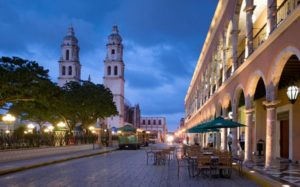
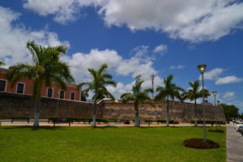
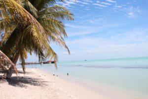
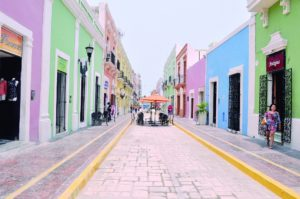
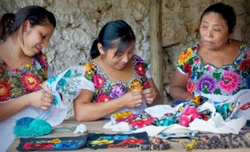

La ciudad amurallada de Campeche es uno de los destinos más bonitos y culturales que tiene México. Su arquitectura, tradiciones e historia llaman la atención de todo el que la visite. A continuación te recomendaremos 10 cosas que hacer en Campeche, para que disfrutes de esta increíble ciudad y conozcas todos sus atractivos.
Declarado como Patrimonio de la Humanidad por la UNESCO, su centro histórico es uno de los principales atractivos de esta ciudad. Sus fachadas y balcones reflejan un estilo barroco y su plaza principal fue construida en el siglo XVI. Recorriendo este lugar puedes visitar Casa 6, la Mansión Carvajal, el Teatro Francisco de Paula Toro y el Palacio Municipal.

Con una extensión de casi 3.5 kilómetros, visitar el malecón es otra de las cosas que hacer en Campeche, realmente no te puedes ir sin haberlo conocido. A su alrededor cuenta con varios miradores en los que podrás apreciar las vistas de la playa y el atardecer perfectamente. De igual forma, tiene pista de patinaje y bicicleta, así como varios negocios.
También conocidos como «defensas contra ataques piratas», los baluartes están en diversos puntos de la ciudad. Entre los más conocidos se encuentran el Baluarte de Santiago, Baluarte San Francisco, Baluarte de la Soledad, Baluarte de Santa Rosa y Baluarte de San Carlos. También hay varios fuertes, como el Fuerte de San José El Alto y el Fuerte de San Miguel.

Otra de las cosas que hacer en Campeche es probar su comida típica, y en este mercado podrás probar delicias de la región como pan de cazón, pámpano en escabeche, patas de cangrejo en papaché, cangrejo moro o tamales de harina colada. La gastronomía en este lugar es una de las más ricas y sin duda alguna te va a encantar.
Otro de los lugares que debes visitar son los petenes. Se trata de diferentes islas de vegetación variada, con una gran variedad de flora y fauna. Este sitio es perfecto para practicar actividades de ecoturismo como paseo en lancha, kayak, acampar y pesca deportiva.
Es una de las antiguas ciudades mayas que se encuentran de pie hasta hoy y se ha conservado en muy buen estado. Se le conoce como Casa de los Itzaes y además de que sirvió como centro religioso, en su arquitectura se pueden ver adelantos tecnológicos. Aquí te dejamos más información sobre este sitio por si decides visitarlo.
También conocida como Bahamita, este lugar es un área natural con una belleza única; sus aguas cristalinas, sus finas arenas y toda la flora tropical que la compone, forman un paisaje inigualable con una gran tonalidad de diversos colores que enamoran a cualquiera que la visite. Es ideal para hacer actividades de ecoturismo y para relajarse en un fin de semana.

Construida en 1732, la antigua entrada de la ciudad es otra de las cosas que hacer en Campeche. Su propósito era la defensa contra los ataques por parte de piratas y ladrones que querían robar los tesoros que aquí se guardaban. Por las noches ofrece un espectáculo de luz y sonido llamado «El lugar del sol».
Es considerada como una de las calles más bonitas de la capital y abarca justamente desde la Puerta de la Tierra hasta la Puerta del Mar. En este lugar se encuentran algunos edificios representativos e importantes como la Casa del Teniente Rey o la Iglesia San Francisquito. También hay restaurantes, galerías de arte, tiendas y cafeterías con balcones.

Finalmente, puedes hacer una parada en la Casa de las Artesanías Tukulná y adquirir todo tipo de recuerdos y objetos artísticos de la región, desde hipiles y sombreros de jipi hasta accesorios de hueso y cuerno de toro.
